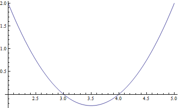
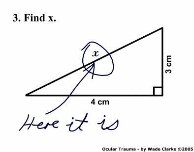

Meaningful Use Of Symbols

What do we mean by Meaningful Use Of Symbols?
In working with algebraic expressions, one important aspect is that of meaningful use of symbols. Since symbols are at the core of algebra and algebraic manipulation, a successful treatment of algebra would be one that chooses variables and construct expressions and equations in perspective. It should also interpret the form of expressions and equations and manipulate expression to show interesting interpretations. An equivalent way to express this is that Meaningful use of symbols includes carefully defining the meaning of symbols introduced to solve problems. This feature of Algebra and successful Algebraic Teaching is closely related to that of Mindful Manipulation, so I encourage you to read my page on that as well.
A particular feature of Meaningful Use of Symbol is that of specifying units. This seems to be a particular source of difficulties for students, even more so when we start to operate on quantities without care for units. This difficult is popularly know as Apples and Oranges, i.e., when we try to compare units that are incommensurable. Extra care must be taken to make sure that, whenever appropriate, units have been specified for an unknown quantity. In other words, symbols are clearly label to stand for a quantity with some dimensions. If that is the case, then operations of incommensurable quantities should be apparent and the student could easily avoid mistakes.
Note that these are not the only features of Meaningful Use Of Symbols. Other important features are to distinguish among the three main uses of variables: (1) as unknowns, (2) as placeholders that can take on a range of variables and (3) as parameters of a function. Some of this uses are more common that others, for example using variables as unknowns amounts to operating on an algebraic expression to solve for an unknown (e.g., find x in 4x+3=11). In this type of use the variable is unknow but fixed and refers to one value only. Later we realize that variables are much richer and can be use as placeholders for ranges of values to show algebraic identities (e.g., (a+b)^2 = a^2+2ab+b^2). More advance treatments use the notion of a function and parameters, for example, what is the effect of changing "a" in the function y = ax^2+b. All these treatments of Symbols in Algebra (1-3) are related but also somewhat separate and they should be treated as such.
Examples
Finding roots and max/min of a polynomial
In general, finding roots of a polynomial is not a trivial procedure. However, in special cases we can use algebra to help us by making Meaningful Use of Symbols and expressions. For example, consider the polynomial f(x) = x^2-7x+12. Which form do you think will be more helpful in determining the roots of this polynomial? (1) f(x) = x^2-7x+12 or (2) f(x) = (x-3)(x-4). Clearly form (2) is more sensical in this case where we can just plug x = 3 and x=4 to find both roots. This example also connects with Geometry in a nice fashion by exhibiting the graph of this parabola:

We can also find the minimum location and value of this polynomial by factoring in the form f(x) = x^2-2mx+m^2+p = (x-m)^2 + p, so that f(x) = x^2-7x+12 = (x-7/2)^2-1/4. If we compare the forms (1) f(x) = x^2-7x+12, (2) f(x) = (x-3)(x-4) and (3) f(x) = (x-7/2)^2-1/4, then clearly form (3) makes more sense for minimization purposes. Since (x-7/2)^2 is always positive, the minimum value is -1/4 achieved at x = 7/2. This example shows that Meaningful Use of Symbols depends on choosing variables and constructing expressions and equations in perspective or in appropriate context. Finally, note that there is no reason to stick with parabolas. Cubics and quartics equations provide a fertile field of examples where Meaningful Use Of Symbols can go a long way in reasoning and sense making in Algebra.
Why Meaningful Use Of Symbols is important for the teaching of Algebra in grades 7-12?
Symbols are at the core of Algebra. If we start using symbols without any regard for their meaning, then students will have a hard time grasping the power and use of Algebra. In fact, poor uses of symbols are at the core of many critiques and jokes about math, like this one:

On the other hand, part of the power and real beauty of math lies on its power to generalize and derive valid relations even without reference to concrete object. However, such a power should be exercised with care, so that Reasoning and Sense Making do not go out of the window the moment we write let x = ...